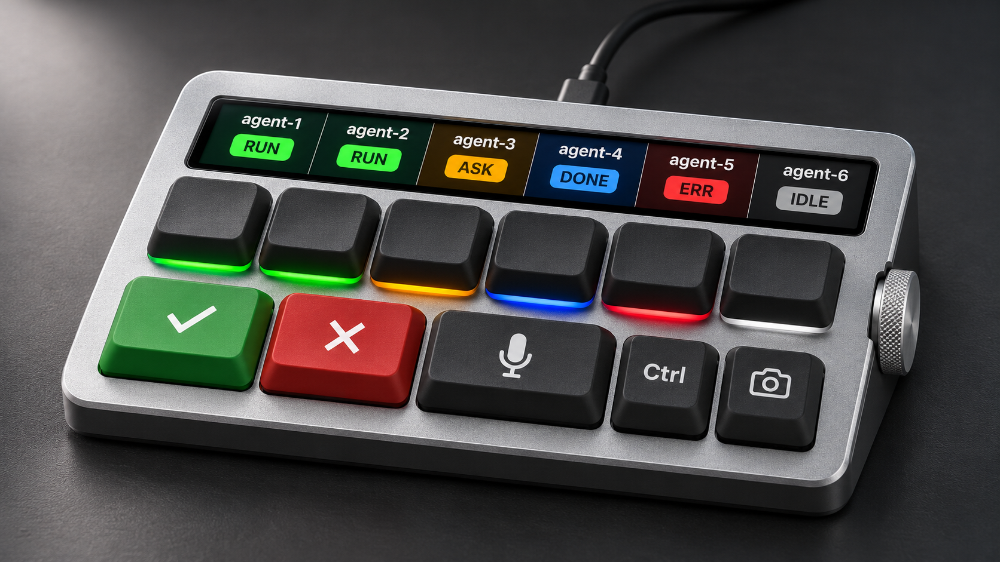
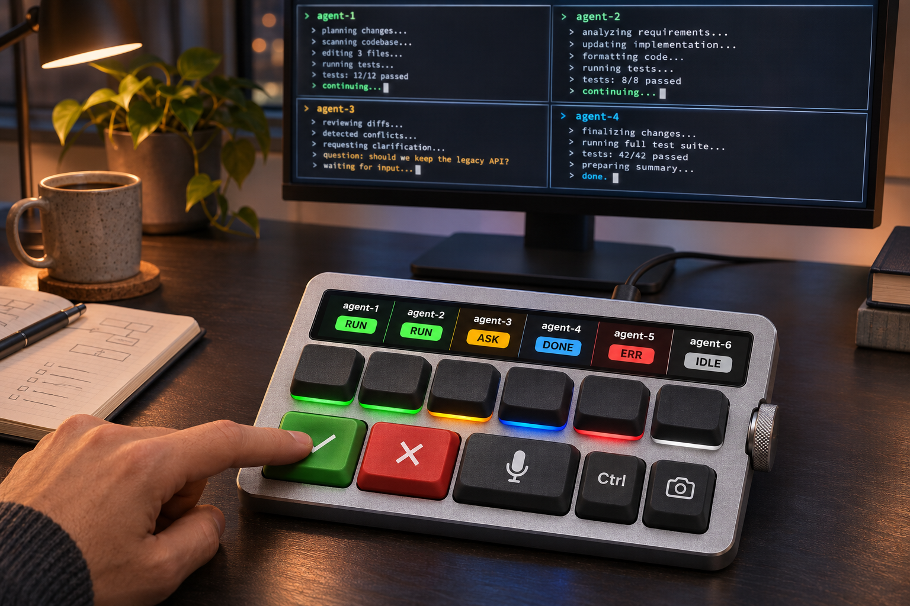
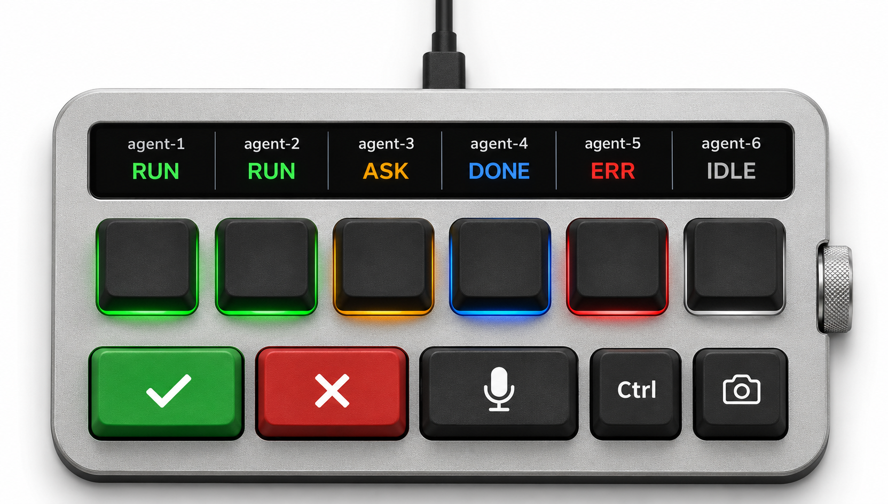

跨所有 agent 的 Codex Micro，外加高危操作的物理二次确认。屏幕告诉你谁在等你，会话键一按直达；✓ / ✗ 通过官方钩子直接回答 agent，不往任何窗口里打字。 Think Codex Micro, but for every agent — plus a physical second confirmation for risky commands. The strip screen shows who is waiting on you, a session key takes you there, and ✓ / ✗ answer the agent through its official hook instead of typing into whatever window has focus.
硬件仍在设计打样阶段。原价 ¥499 / $99，控制软件免费。Hardware is still in prototyping. List price $99 / ¥499. The control software is free.

五个终端、两个 IDE，总有一个停在权限提示上没人管。Claude Code 社区有人说得直白：瓶颈已经不是模型的速度，而是人什么时候发现它在等。Five terminals and two IDEs, and one of them is always stuck on a permission prompt. As one Claude Code user put it, the bottleneck is no longer the model's speed but how long it takes a human to notice it is waiting.
宏键盘和快捷键面板，本质是往当前前台窗口模拟按键。焦点一跑，回车和语音就打进了编辑器、聊天框，或者另一个 agent 的会话。Macro pads and shortcut decks simulate keystrokes into whatever window is in front. The moment focus moves, your Enter or dictation goes into the editor, a chat app, or another agent's session.
Anthropic 披露，用户原本就会批准 97% 的权限提示。日常命令交给 auto mode 就好；真正要人看一眼的，是 git push --force、生产环境 kubectl、数据库写入这类做了就回不去的操作。Anthropic reports that users approved 97% of permission prompts anyway. Let auto mode handle the routine stuff. What still deserves a human look is the irreversible kind: git push --force, production kubectl, database writes.

电脑上跑一个本地中枢（hub）。各家 agent 的钩子把事件发给它，它点亮对应的会话格；你按键，它把决定直接还给那一个会话。每张卡片下面写着现在做到了哪一步。A small local hub runs on your computer. Each agent's hooks send it events, it lights up the matching session zone, and when you press a key it sends the decision straight back to that one session. Each card says how far along that part is today.
Claude Code 和 Codex 官方支持 PermissionRequest 钩子。agent 请求权限时，中枢收到请求、在屏上显示原始命令；你按 ✓ 或 ✗，中枢把 allow / deny 直接返回给这个会话。Claude Code and Codex officially support a PermissionRequest hook. When an agent asks for permission, the hub shows the raw command on screen; press ✓ or ✗ and the hub returns allow / deny to that session.
批准不经过键盘模拟，焦点停在记事本还是聊天框都无所谓。多条请求同时到达时排队，✓ 只作用于屏上正在显示的那一条；按设计，每条请求还会带编号和随机数，设备回报时对得上才执行（随机数校验尚未实现）。Approvals never go through simulated keystrokes, so it doesn't matter whether focus is on a notepad or a chat window. Simultaneous requests are queued and ✓ only applies to the one on screen; by design every request will also carry an id and nonce that the key press must match (the nonce check is not built yet).
请求排队：已完成Request queue: done 随机数校验：已设计，待实现Nonce check: designed, not built yetgit push --force、生产环境 ssh / kubectl、数据库写入、改密钥、合并 PR：屏幕变红并显示原始命令，第一次按只回"再按一次"，第二次才放行。git push --force, production ssh / kubectl, database writes, secret changes, merging PRs: the zone turns red with the raw command. The first press only answers "press again"; the second one lets it through.
git push --force）Verified in the hub (git push --force)
高危闸门 v1.4：中枢已验证（两次 ✓ 放行，✗ / 超时 deny）Gate v1.4 verified in the hub (two ✓ presses; ✗ / timeout denies)
真实 auto mode 会话：待测Live auto-mode sessions: not tested yet
curl … | sh、-EncodedCommand、删除根目录这类命令，设备上按多少次都不放行，直接退回终端原生确认，由你在终端里亲自决定。Commands like curl … | sh, -EncodedCommand or deleting the root directory cannot be approved from the device at all. They fall back to the terminal's own prompt so you decide there, deliberately.

每家 agent 的钩子能力不一样，能做到哪一档就写哪一档。国产 agent 实测录屏之后再更新这里。Every agent exposes different hooks, so we label each one honestly. Chinese agents get updated after we test and record them.
| AgentDeck | Codex Micro | Logitech MX Keypad | Ulanzi Vibe Key (AU05) | |
|---|---|---|---|---|
| 价格Price | ¥499 / $99 早鸟 ¥399 / $79early bird $79 / ¥399 |
$230 2026-07 开卖，约 12 小时售罄sold out in ~12 h (Jul 2026) |
$99.99 | ¥269–299 |
| 屏幕Display | 6 等分长条屏，显示每个会话的状态和待确认命令6-zone strip screen: per-session state and pending command | 无屏，6 个键用 RGB 颜色表示状态No screen; 6 keys show state by RGB color | 9 个独立 LCD 键9 individual LCD keys | 无屏，3 种灯效No screen; 3 light modes |
| 按键Keys | 矮轴机械键 + 3 个大号机械键 + 金属滚轮Low-profile mechanical + 3 large mechanical keys + metal wheel | 13 个矮轴机械键 + 摇杆 + 旋钮13 low-profile mechanical keys + joystick + knob | 硅胶薄膜键，无旋钮 / 滚轮Silicone membrane keys, no knob / wheel | 6 个热插拔矮轴 + 旋钮6 hot-swap low-profile keys + knob |
| 内置麦克风Built-in mic | ✓ 板载 MEMSonboard MEMS | ✗ 只调用电脑的麦克风uses the computer's mic | ✗ | ✓ |
| 支持的 agentAgents | 跨家：Claude Code、Codex 已接入，Cursor / Gemini / 国产 CLI 逐家适配Cross-vendor: Claude Code and Codex in the hub; Cursor, Gemini and Chinese CLIs one by one | 只支持 OpenAI CodexOpenAI Codex only | 官方宣传支持 Copilot、Claude Code、CodexMarketed for Copilot, Claude Code, Codex | Ulanzi Studio 通用映射，宣传支持 Claude Code、Codex、千问、豆包等Generic Ulanzi Studio mapping; marketed for Claude Code, Codex, Qwen, Doubao |
| 批准方式How approvals work | 官方钩子直接回答，不经过前台窗口Answers the official hook directly, not through the focused window | 快捷键Shortcut keys | 快捷键 / SDK 插件，随前台应用切页Shortcuts / SDK plugins, pages follow the foreground app | 模拟快捷键Simulated shortcuts |
| 高危命令二次确认Second press for risky commands | ✓ 高危按两次，极危锁死risky: press twice; critical: locked | ✗ | ✗ | ✗ |
竞品信息截至 2026-11，来自官网和公开评测（PCMag、CNET、InfoQ、9to5Mac 等）。AgentDeck 一列是设计规格，工程样机还在打样，没有量产实物。Competitor info as of Nov 2026, from official pages and public reviews (PCMag, CNET, InfoQ, 9to5Mac and others). The AgentDeck column is a design spec; engineering prototypes are still being built.
免费软件现在就能用它们：把按键映射成 F13–F24 热键，就能跳转会话、批准、拒绝；状态先在电脑上的置顶小浮窗里看。往它们按键屏上推状态的原生插件还在开发。它们没有长条屏、板载麦克风和机械大键。先用起来，觉得值再换。The free software works with them today: map their keys to F13–F24 to jump to a session, approve or deny, and watch status in a small always-on-top window on your PC. Native plugins that show status on their key screens are still in development. You don't get the strip screen, built-in mic or big mechanical keys. Try it first, upgrade if it earns its place.
我们正在招 30–50 位每天同时开 3 个以上 agent 的开发者，用自己手上的设备试用。下面留邮箱时选"已有设备"即可。We are recruiting 30–50 developers who run 3+ agents a day to try it on hardware they already own. Pick "I own a device" when you leave your email below.
预计时间线：2027 年先做软件内测和工程样机，之后众筹。发货时间以众筹页面为准，目前还没有锁定。Rough timeline: software beta and engineering prototypes in 2027, then crowdfunding. Ship dates will be set on the campaign page; nothing is locked yet.
本表单目前只是本地演示。This form is a local demo for now. 真实表单服务接入之前，你填的内容只存在你自己的浏览器里，不会发给我们，我们也收不到、无法联系你。Until a real form service is connected, what you enter stays in your own browser. It is not sent to us, so we cannot see it or contact you.
说明：这是本地演示，邮箱只存在你这台浏览器里，没有发给我们，所以我们收不到、也没法联系你。真实表单接入后本页会更新，请到时再来留一次。Note: this is a local demo. Your email is stored only in this browser and was not sent to us, so we cannot see it or contact you. This page will be updated once a real form is connected; please come back and sign up again then.